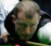

Mr. Clemens, did you order the Code Red?(created 16 hours 7 minutes ago)
"You're here under oath, and yet we have lie after lie after lie." Sounding almost like the scene in " A Few Good Men " where Tom Cruise is trying to get Jack Nicholson to tell the truth about a. . . more

11 votes 5 comments

Rocket fails to take off in Newport(created 3 hours 41 minutes ago)
Steve Davis took on Ronnie O'Sullivan in the last 16 of the 2008 Welsh Open this afternoon. Davis, the 50 year old World Number 15, needed two snookers in the opening frame. But O'Sullivan, the. . . more
9 votes 10 comments
Best in Baseball: AL Pitchers(created 12 hours 12 minutes ago)
Continuing my however-many part series (I haven’t been keeping track), this one’s when I choose the best pitcher on each American League team. Like this guy said, a lot of these are pretty easy. . . more
11 votes 10 comments
Have We Seen the Last of Ronaldo?(created 4 hours 30 minutes ago)
Brazilian striker Ronaldo's horrific knee injury could mean retirement for the 3 time FIFA World Player of the Year. Legendary Brazilian footballer Ronaldo may have seen his last bit of action. . . more
12 votes 15 comments
Premier League Abroad?(created 5 hours 24 minutes ago)
Last Thursday the 20 Premier League clubs decided to look into the possibility of creating an extra round of matches that would be played outside of England. In this plan the extra round would be. . . more
11 votes 30 comments
2008 MLB Rankings--Starting Pitching(created 16 hours 20 minutes ago)
# Johan Santana—METS —Since 2004, no one has been as dominating as Santana, as he won two Cy Young awards in that time. From ’04 to ’06 he averaged 18 wins, 230 innings, and almost 250. . . more
9 votes 15 comments
 18 votes
18 votes
 17 comments
17 comments


Top Recent Comments